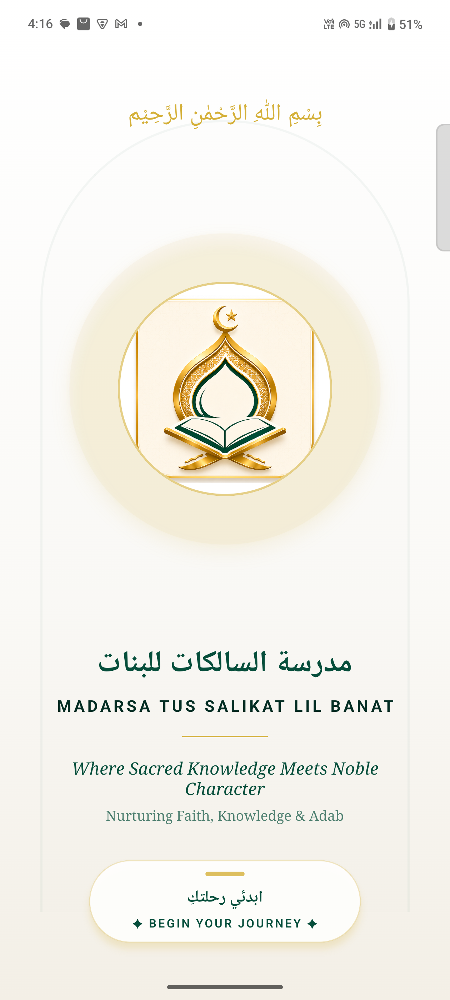
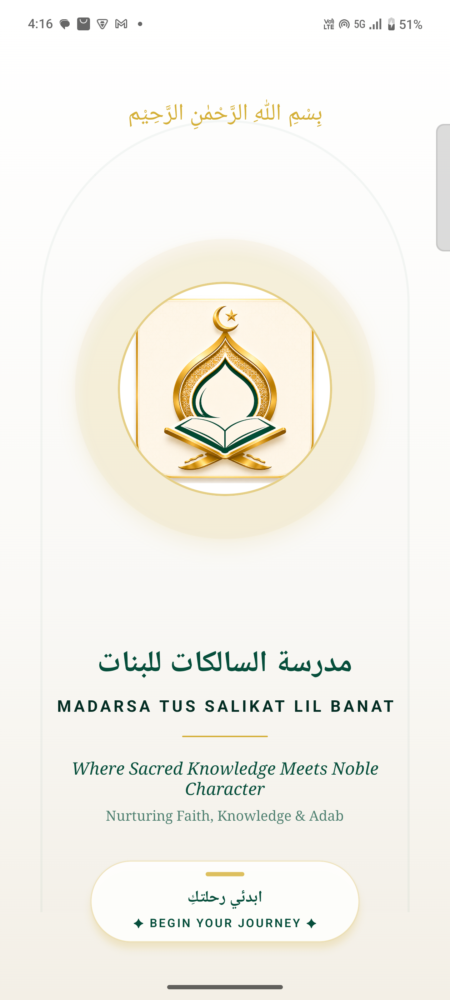
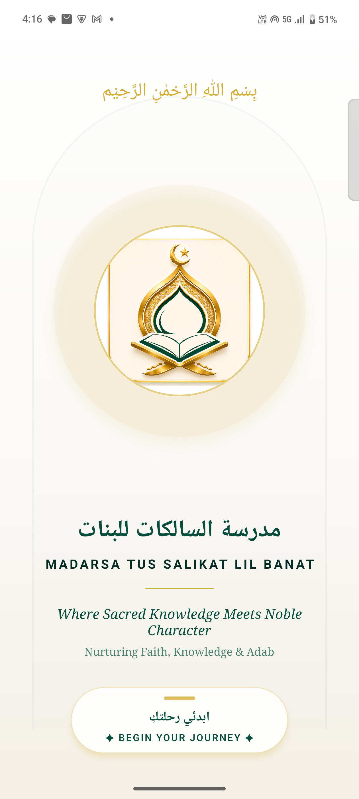
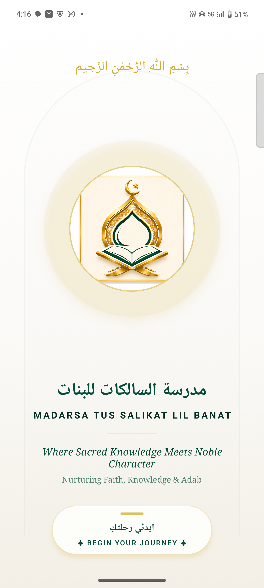
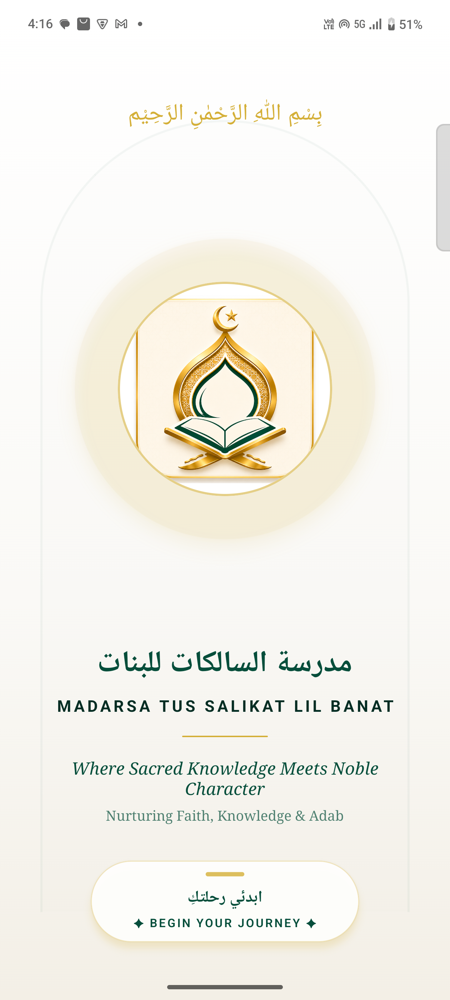
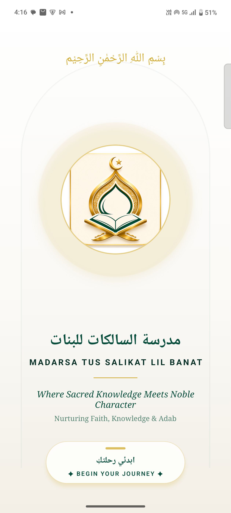

Execution Timestamp: 2026-08-05 04:17:07
| ID | Regression Case | Verification Target | Verdict | Screenshot | Observation Notes |
|---|---|---|---|---|---|
| R001 | Splash Screen Rendering | Verify splash screen loads, visual logo scales correctly, and no crash occurs on boot. | PASS | No observations recorded. | |
| R002 | Keyboard Focus Viewports | Verify inputs focus cleanly and keyboard does not obscure target text entries. | PASS | No observations recorded. | |
| R003 | Root Layout Navigation Guard | Verify deep links or layout redirects protect unauthorized users. | PASS |  |
No observations recorded. |
| R004 | Authentication Login | Verify student and admin user accounts login successfully using standard inputs. | PASS | No observations recorded. | |
| R005 | User Registration / Signup | Verify registration saves account records in pending status and stores referral logs. | PASS | No observations recorded. | |
| R006 | Forgot Password Lifecycle | Verify recovery reset emails are generated and sent successfully to matching inputs. | PASS | No observations recorded. | |
| R007 | Dashboard Screen Render | Verify tabs, Islamic status widgets, and quick action components render correctly. | PASS | No observations recorded. | |
| R008 | Course Lessons List | Verify registered courses display modules, lessons, and progress stats accurately. | PASS | No observations recorded. | |
| R009 | Lesson Detail View & Audio Player | Verify lesson audio files stream, play, pause, and track progress. | PASS |  |
No observations recorded. |
| R010 | Quiz Submission | Verify server-side quiz grading evaluates scores and blocks duplicate submissions. | PASS |  |
No observations recorded. |
| R011 | Payment Submission | Verify student transaction submissions transition state to processing and update logs. | PASS |  |
No observations recorded. |
| R012 | Certificate Generation | Verify PDF certificate generation loads in web viewer and download link operates. | PASS | No observations recorded. | |
| R013 | Notification Inbox | Verify received push notifications render in notification screen list. | PASS |  |
No observations recorded. |
| R014 | Profile Details Update | Verify custom avatars and profiles update without modifying locked attributes. | PASS | No observations recorded. | |
| R015 | Settings Configurations | Verify theme changes, diagnostics check, and app settings operate. | PASS |  |
No observations recorded. |
| R016 | Account Logout | Verify session tokens are cleared and user is redirected back to login screen. | PASS | No observations recorded. | |
| R017 | Offline Mode Caching | Verify offline caching loads profile information and lessons without network access. | PASS | No observations recorded. | |
| R018 | Background State Resume | Verify app recovers active session and media playback after background pause. | PASS | No observations recorded. |
| Classification | Log Snippet |
|---|---|
| 🟢 No telemetry exceptions detected in Logcat. | |